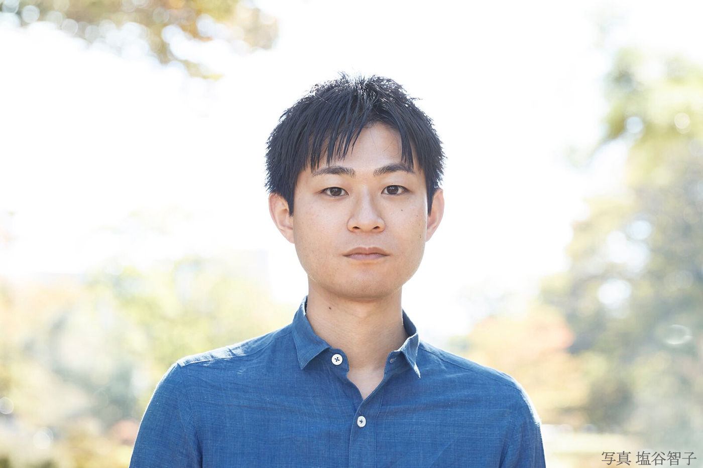
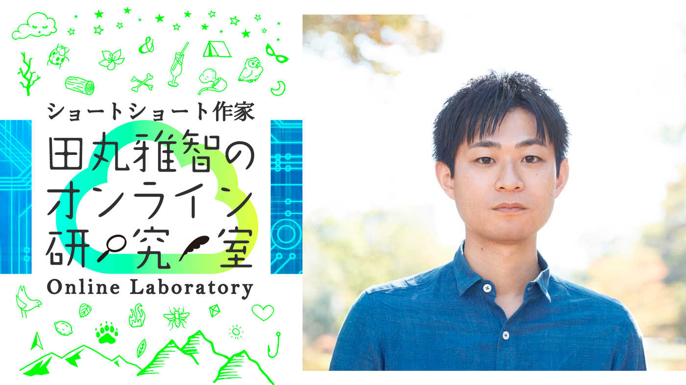

| ショートショートガーデン プチコン優秀作品集 海 (PHP電子) | |
| Unknown | |
| 株式会社PHP研究所 (2018) | |
ショートショートガーデン
プチコン優秀作品集
海
田丸雅智 編
☆はじめに☆
「プチコン２ 海」へ応募してくださったみなさん、本当にありがとうございました。今回は第1回を大幅に上回る214もの作品が集まり、嬉しい悲鳴を上げながら審査に臨みました。
「海」というテーマは、拙著に『海色の壜』という本があるように、ぼく自身も深い思い入れを持っています。そんな中、審査を進めていくうちに、これまで自分にはなかった海への新しい視点やおもしろいアイデアとたくさん出会うことができ、とても楽しかったです。
今回も最後まで迷い、やむを得ず受賞とできなかった作品が多数ありました。ここに収録されていない作品も、ぜひショートショートガーデン上で読んでみてほしいなと思います。そして、自分なりのベストセレクションを作ってみてください。
それでは、プチな海の世界へ、行ってらっしゃい！
田丸雅智

【編者紹介】
田丸雅智（たまる・まさとも）
1987年、愛媛県生まれ。東京大学工学部、同大学院工学系研究科卒。
新世代ショートショートの旗手として執筆活動に加え、「ショートショート大賞」を自らが発起人となり設立、全国各地で創作講座を開催するなど幅広く活動している。
2017年には400字ショートショートの投稿サイト「ショートショートガーデン」を立ち上げ、さらなる普及に努めている。
主な著書として『海色の壜』『夢巻』（双葉文庫）、『芸能人ショートショート・コレクション』（角川春樹事務所）、『たった40分で誰でも必ず小説が書ける超ショートショート講座』（キノブックス）など多数。
ショートショートガーデン
「プチコン２ 海」
最優秀作
人魚の檻。
AYAKA
海岸からほど近いそのお寺は、山に抱かれるように建っていた。
苔むした階段を登りきると山門があり、※※寺と書かれた寺額が掲げられていた。振り返ると海を一望する事が出来た。
境内には草木に隠れるように朱色の格子戸が嵌った岩窟があった。
『この格子で閉ざされた途は海へと続く』という伝承があるらしい。
すぐ側には小さな塚があり『人魚塚』と書かれていた。
シーグラスや貝など見目麗しい物が供えてあり、海の寺の風習なのかと面白く思う。
私は格子の隙間から内を覗き込み潮の香りを嗅いだ。
耳を澄ますと、歌声とも啼き声ともつかぬ音と波の音。
噫。噫。噫......。
ざ。ざ。ざざーん......。
強い風が吹いた。
岩窟の奥闇から桜の花びらがひらひらと、いくつも舞い出てきた。
私は花びらを目で追いつつ、潮風に乱れた髪を手櫛ですいた。
──かさり。
手の内を見ると、花びらだと思ったのは全て桜色のウロコであった。
田丸雅智の講評
今回のお題である海を中心に据えつつも、山、寺、岩窟などたくさんの強いモチーフが登場し、ともすればバラバラになってしまいそうなところを、寂しく妖しげな雰囲気でひとつの世界にまとめ切った手腕がお見事です。
ここぞというところで使われる擬音語、そしてウロコの登場のさせ方も絶妙で、ビジュアルが長く残りました。
ショートショートガーデン
「プチコン２ 海」
優秀作
『ボトルシップ』
ひょろ
やあ、よく来たね。凄い数で驚いたろう？僕のボトルシップコレクションさ。
こいつらは普通のとは少し違う。瓶の中に海水を入れてあるんだ。船に合わせた海水を態々選んでね。
何故なら船が魂を宿すからなんだ。この船たちは活きている。普通のボトルシップなんて、僕から言わせれば死んでいるのと同じさ。
まあ、論より証拠、まずは見てごらんよ。
ほら、これはアルゴー船。海水はギリシャで汲んできたんだ。舳先に止まっているのはセイレーン。この瓶を枕元に置けば、彼女の歌声で毎日安眠さ。
でも目覚めないと困るからね、反対側にはこいつを置いておく。
これは戦艦大和。自慢の巨砲をズガンとやってもらえばどんなに寝坊助でも一発で目が覚めるさ。
どうだい、僕のコレクションは。何？これだけ集めるのにはお金が要ったろうって？
その点は心配ないよ。僕にはこのボトルシップがあるからね。
甲板には七福神。お神酒の海に浮かぶ活きた宝船さ。
田丸雅智の講評
船が魂を宿すという不思議なボトルシップに魅了されました。セイレーンのいるアルゴー船、巨砲を持つ戦艦大和...自分だったらどんな船を浮かべようとワクワクしてきます。そしてラストの宝船。素晴らしい切れ味の結末でした。
ショートショートガーデン
「プチコン２ 海」
優秀作
灰青色の手
TAMAUSA825
担任の先生は変わった人だった。
いつも灰青色のスーツを着ている髭面の大男だったが、おおらかな性格で、いつも穏やかな笑顔を絶やさなかったので生徒からは大人気だった。
担当する科目は地理で、赤道直下から北極まで世界中のどんな国や地域の話をするときでも、まるで自分が実際に旅してきたかの如く臨場感たっぷりの話をしてくれた。
卒業式の帰りに、クラスの生徒と先生みんなで近くの海へ出掛けた。
先生は最後の授業と称して生徒たちを砂浜に座らせ、世界の海について臨場感たっぷりの話をしてくれた。
卒業式らしく、みんなが大人になった時にこの広い世界に旅立てるように願っている、との言葉で授業は締め括られた。
授業が終わり、先生が解散の指示を出すと、生徒たちは名残惜しげにそれぞれの帰路についたのだった。
オレンジ色に染まった海を振り返ると、大きなクジラの尾が夕陽を背に、まるで手を振るように弧を描いていた。
田丸雅智の講評
懐が深く、包みこんでくれそうな先生に自分までも安心感を覚えてしまい、また、世界のことを話すその魅力的な語り口も本当に聞こえてきそうでした。卒業式の最後に見た雄大な景色を生徒は一生忘れないことでしょうし、まるで読者にも鯨が手を振ってくれているようで、強く印象に残りました。
ショートショートガーデン
「プチコン２ 海」
優秀作
Drink the Sea
川瀬 七貴
ある所に、猛悪なる方策で隣国を制圧している王が居た。そんな彼が唯一難渋していたのが海に囲まれた国、素。素は黄金の国と噂されていたが、荒波に守られ近づく事すら叶わなかった。
「誰か！如何なる手段でも良い！あの海を渡る方法を申してみよ」
皆が閉口する中、一人の男が前に出た。
「私が」
彼は以前、王の側近だった。だが王に異を唱えた為、四肢を落とされてしまった。
「ほう、お前に何が出来る」
「海水を呑むのです」
翌日、王は兵を率いて男と共に海岸へ。男は醜悪なる笑みを浮かべると、顔を海面に浸けた。すると波が吸い込まれ、海底が見えた。
「よし！出陣だ」
男を馬で押し退け、海を渡る。全ての兵が海へ降りたのを見計らうと、男は大声をあげた。
「王よ！実は私、素の出身でして！素は私の様な忌術師達が住まう所。黄金の国でも何でもない！」
王は振り返るが、時既に遅し。奇矯な笑声を上げ、男は口から高波を吐き出した。
田丸雅智の講評
荒波に囲まれた国「素」。そのネーミングや古代中国の怪しげな雰囲気も相まって、いったい何が起こるのだろうと冒頭から興味を引かれます。
海水を呑むというシンプルですが大胆なアイデアが結末にうまく活かされている点もよかったです。男が四肢を切り落とされているというディティールも素晴らしく、「素」のお話をシリーズとしても読んでみたくなりました。
ショートショートガーデン
「プチコン２ 海」
優秀作
海の花
ゆた
私が幼い頃を過ごした町は、海沿いの田舎町だった。夏の間は暇さえあれば海に潜り、遊泳のできない時期は一日中砂浜を走り回る。夜になれば灯台の灯りを横目に、波の音を子守唄がわりに眠った。
五歳の八月。その町を離れた。
お別れの日に一番仲の良かったえみちゃんが泣きながら私にくれたのは、五センチほどの小さな塊だった。
脆く簡単に粉のように崩れるそれは、私の町では海の花と呼ばれていた。
潮流の弱い一部の海底にしか溜まらない海の花は海の成分が凝縮されたもので、水に溶くと海を作り出せるのだ。
山あいの町へ引っ越した私は、小さな器に海の花を溶かしては海を作った。
毎夜私の部屋に広がる小さな海は寄せては引いて、ささやかな波音をたてる。寂しさに泣く夜も、波の音は私を安心させた。
最後の海の花を溶かした夜、泣かなくなった私の小さな海の向こうに、懐かしい灯台の灯りを見つけた。
汽笛の音が、部屋に小さく響いた。
田丸雅智の講評
「海を再現できる何か」というアイデアは今回たくさん見られましたが、仲良しの友達からもらった、湯の花ならぬ海の花というモノに心惹かれました。
引っ越しで離れてしまった海の町を思いだしてただ悲嘆に暮れるのではなく、その寂しさを穏やかに克服していった様が伝わって、とても温かい気持ちになりました。
ショートショートガーデン
「プチコン２ 海」
優秀作
シーガレット
中谷直樹
扉を開けると、そこはハワイだった。
ふらっと入った煙草屋。店の中なのに強く穏やかな陽射し、ゆったりとした風、心地よく熱いビーチ、そして煌めく青い海。
「いらっしゃいませ」
ヤシの木にもたれた老人が吸っていた煙草を消すと、元の店内に戻った。 「これはいったい・・・？」
「乾燥させた海藻を巻いた物で、煙を嗅いだ人はその景色を体感できるのですよ」 パッケージには『Seagarette』の表記。半信半疑のまま、店内に漂う潮の香りに誘われるように一つ購入した。手軽に楽しむにはもってこいだ。
ふと、黒いパッケージの物が目に入った。
「あれは滅多に取れないので、先程の200倍の値段になります」
「200倍？ならきっと天国の心地がするんでしょうね」
すると店主はハハハと笑った。
「確かに。きちんと装備しないと吸ったとたんにぺちゃんこになりますから」
よく見ると『深海(水深200m以上)』と書いてあった。
田丸雅智の講評
不思議な煙草は拙作「夢巻」にも登場しますが、店の扉を開けた先にいきなり広がる光景、そして「Seagarette」というネーミングに、これは欲しいと強く思わされました。
「200倍？ならきっと天国の心地がするんでしょうね」というセリフが絶妙な伏線になっていて、巧みでした。
ショートショートガーデン
「プチコン２ 海」
優秀作
帰海
タカ
夜な夜な院を抜け出しては徘徊をする少女、今日も駐在員に補導され院へとつれもどされる
でもそれは孤児院ではあまり珍しくはない光景
子供達に親に捨てられた現実を理解するなど幼過ぎるからだ
そしてまた今夜も院を抜け出す少女
満月の夜には抜け出したりしない、明るくて見付かり安いからだ
それでも彼女は誰かに呼ばれた気がした
気のせい？無意識？彼女は何かの音に引き寄せられてく
ザザザ...ザザザ......
松林を抜けると目の前には月明かりでキラキラと光る海
初めて見る光景に少し驚いたが波の音が懐かしく感じてもいた
少女は恐る恐る海へと近づき足をつけてみる
一瞬冷やっと感じた次の瞬間足下が
眩い光に覆われ両足が鱗に包まれた尾びれに変わった
少女は魚の様に泳ぎ出す
１度水面に顔を上げ陸の方を見ると
直ぐさま沖へと泳ぎ出す
母なる海に帰って行く様に
田丸雅智の講評
孤児院から夜な夜な抜け出すという少女。そして、親に捨てられた現実を理解するには幼過ぎるという言葉にドキッとさせられます。
それでも院を抜け出すことをやめない少女の両足が尾びれに変わったのは、果たして偶然でしょうか、必然でしょうか。孤児の少女が「母」のもとへ帰っていく姿も印象的でした。
ショートショートガーデン
「プチコン２ 海」
優秀作
潮目が変わって
UKITABI
生まれ育った町の海に、潮目がある。
性質が違う海水の塊同士の境が、海面に表れたものだ。
近所のそれは最近、急に激しくうねり波立つようになっていた。
調査しても原因は不明。町の人々は海の神様をまつる神社への供物を増やし、お祓いをし、海辺も頻繁に掃除した。
それでも潮目の動きは一向におさまらない。
「どうしたの？」
掃除の翌日、筋肉痛とともに海を眺めていると自然に言葉が出た。
その晩、夢に潮目が出てきた。
「塩がきつくて......海水の塊がぶつかり合うと、しみてヒリヒリするの」
「それはつらいねぇ。痛くて身もだえてたのかぁ」
「そんなところ」
翌朝、町の皆に「知恵袋」と呼ばれているおばあちゃんに相談した。
その結果、ヒアルロン酸やらムチンやらが舟に積まれ、海に浮かべられたのだった。
潮目は静まった。
おばあちゃんは笑いながら海を見遣った。
「どんな目にも、ドライアイには目薬じゃの」
田丸雅智の講評
潮目に着目された点、そしてそれが暴れだしたという設定がユニークでした。
普通ならばそれを恐れるばかりになりそうなところを、思わず心配になって様子を尋ねてしまったところに、昔から町と共にある潮目に対する愛着のようなものを感じます。知恵袋のおばあちゃんの解決策もなるほどで、微笑ましく好みでした。
ショートショートガーデン
「プチコン２ 海」
優秀作
彼の猫と、彼女の海
北澤奇実
彼は猫を飼い、彼女は海を飼っていた。二人は離れて暮らしていたので時々近況をやり取りした。
猫は元気？
うん。鳥や蜥蜴をくわえてくるよ、海はどう？
海も元気。今日は銀色の船を呑み込んだの。
猫はなぉなぉってよく鳴くよ。
海だってざぅざぅって鳴くわ。
猫の体はよく波打ってる。
海なんかいつも波打ってるわ。
猫は随分大きくなったよ。食べすぎかも知れない。
海も大きくなったわ。海岸線をいくつも食べちゃった。
猫は今夜は静かだ。
海も静かだわ。眠っているみたい。
猫が最近弱ってるんだ。
海も昔より元気が無くなったわ。
彼の猫は一度だけ振り返ると家を出て行った。
猫は死ぬ前に姿を消すんだよ。
海はどうなるのかしら。
やがてその時が来た。
海は猫のように跳ね上がると、蜜柑の皮が剥ける形で地球の重力を引き離した。そして粉々の滴となって、ひとつひとつに地球を映しながらゆっくり遠くへ消えていった。
田丸雅智の講評
「彼は猫を飼い、彼女は海を飼っていた。」このさりげない、しかし思わず目を疑ってしまう出だしが秀逸です。
猫と海の成長を知らせ合うやり取りもとても自然で、時間の経過の描き方もお見事でした。そして、そのまま何の説明もなく圧倒的なビジュアルだけを残す結末も素晴らしかったです。
ショートショートガーデン
「プチコン２ 海」
優秀作
真珠
矢口慧
彼女の郷里では、蜃気楼の被害が深刻らしい。
大蛤が餌になる海鳥を捕る為に吐くのだが、巧みに港を真似る為、しばしば人が迷い込む。蜃気楼に捕らわれ、戻れた者は稀である。
幼い頃、事故で沖に出て三ヶ月、彼女は蜃気楼の町で暮らし、その記憶はほとんど残っていない。けれど彼女は確かに海市の住人だ。
大蛤は、飲み込めない異物を真珠に変える。
齢八十八を迎えるというのに、彼女の肌には皺一つなく、人が最も美しいとされる年頃、その姿のままを生きている。
ドラマや映画に出演し、女優として大成した彼女の影響で、年頃の娘が自分も永遠の美しさをと、海に出ては遭難騒ぎを起こす事件が未だ絶えない。
取材の中、そんないいものでもないですよ、と彼女は言う。
歯も骨も衰えて、内臓もね。肌も割れたらもうそのまま。
そう二の腕の包帯を解けば、表皮が変質した真珠層の下からは、黄ばんで皺くちゃの、年相応の肌が覗いた。
田丸雅智の講評
大蛤の生みだす蜃気楼の町に迷い込んだことがある、という謎めいた設定に引き込まれました。
そして、その町にいた証拠が真珠という形で身体に残っていて女優業に活かされるという展開もユニークです。羨望の眼差しに釘を刺すような結末にもハッとさせられました。
ショートショートガーデン
「プチコン２ 海」
優秀作
灯台
goppe
周りを海に囲まれたこの島で、今日から僕は生活する事になった。
島の中心には大きな灯台が建っている。白い外観で、島のどこからでも見る事が出来る。その灯台を囲むように、居住区が広がっていた。
「ここの海は綺麗だからな、お前も少しは心を洗った方がいいと思うぞ」
その声の主は、今日から僕がお世話になるであろう人物だ。
「善処します」
島に着いたばかりの僕は、海を眺めていた。どこかの孤島なのか、他の陸地は確認出来ない。
「この先の明るい未来の事でも考えたらどうだ」
一足先に灯台に向かって歩くその人の背中に向かって、僕は小さい声で応えた。
「看守さん、灯台の下は暗いんです。それとも、罪を犯したこの僕の未来を灯台が照らしてくれるとでも？」
立ち止まった看守は背を向けたまま、首だけをこちらに向け言った。
「心配無い。ここにはサーチライトもあるし、俺達も監視で目を光らせているからな」
田丸雅智の講評
今回の応募作では灯台に着目した作品は珍しく、それだけでとても目立っていました。単に島へ移住しただけでなく、少し意味ありげな感じに読まされ、「僕」の立たされている状況が明らかになったときにハッとします。
「灯台の下は暗い」というセリフからの皮肉たっぷりの結末が痛快です。
ショートショートガーデン
「プチコン２ 海」
優秀作
シーフード
そるとばたあ
南の島で買った海色のパーカーは僕のお気に入り。なんと海を体感できるパーカーだ。
フードを被るとキラキラ光る海面が見えた。首元の紐を引っ張り、海中へと潜る。浅瀬の魚たちの楽園。海亀に手を振る。遥か頭上には船底が見える。本物の海のようだ。島の人に、深く潜り過ぎないようにと忠告されたが、今日はもう少しだけ潜ってみることにした。
次第に辺りは暗く、体は冷たく、息苦しさを感じてきた。ここは深海の世界。パーカーは体に張りついたが、好奇心が勝ち、さらに潜った。
ついに人類未踏の最深部に到達！謎の巨大生物の目が光った。僕は近づこうとした。が、紐を限界まで引っ張ってしまい、顔が塞がれ息ができない。なんとか僅かな隙間に指をかけ、一気に広げた。急浮上で見た海のグラデーションは、一瞬だったが怖いくらいに美しく、鳥肌が立った。
お腹いっぱい海を感じた僕は、フードを脱ぐと、思わず耳に入った海水を抜こうとケンケンした。
田丸雅智の講評
「何かで海を体感できる」系の作品は珍しくありませんでしたが、本作は「シーフード」の言葉遊びや、パーカーの特徴と掛けた展開がお見事でした。
生死のかかった緊張感あふれる場面からの脱力感に満ちた「あるある」シーンが素晴らしかったです。
ショートショートガーデン
「プチコン２ 海」
優秀作
梅津寺（ばいしんじ）
松山帖句
ゴトン。電車が止まると車内のあちこちで歓声が上がった。
目の前に広がる真碧な海。
駅名標に『梅津寺』と書かれている。
あれ？子どもの頃、家族でここに来たかも。たしか桟橋の上に二階建ての座敷が並んでてその中に売店があったような。
「納涼台ですか？なくなっちゃいました。ここは随分前に海水浴場ではなくなったんです」
車掌が言った。
「そうだ。私、その納涼台で父と母とおでんを食べたんです。大根と玉子を甘い辛子味噌につけて。とても美味しかった・・・あ、これは向こうに持って帰ってもいいやつですか」
「はい。思い出は人や物じゃないので」
「よかった」
「じゃ、そろそろ出発します」
車掌がそう言うと、窓の外は一瞬にして暗闇になり電車の灯がぼんやりと点った。車内は再び静まり返り、私の体もゆっくりと動かなくなった。
「さて、来年の帰りはどこに寄りましょうかねえ」
お盆の深夜のホームに汽笛の音だけが鳴り響いた。
田丸雅智の講評
梅津寺は実在する駅ですが、海の見える駅という舞台がとても魅力的です。
納涼台という言葉とそこでの思い出にノスタルジックな気持ちになった直後、一転して明かされる「私」たちの正体にドキッとします。ですが、あくまで貫かれる、のんびりした雰囲気。ずっとこの世界に浸っていたいと思わされました。
ショートショートガーデン
「プチコン２ 海」
優秀作
情報洪水警報
琴子
近所の小学校でサイレンが鳴っている。
「情報洪水警報発令。皆さん、すみやかに避難して下さい」
俺はアパートの窓から外を見た。
たくさんの写真や文字が道路を流れている。
本当に危険かもしれない。すぐ避難するか。
俺はスマホと財布と当面の着替えを入れたリュックを背負い、
長靴を履いて、部屋を出た。
流れてくる...
犬の写真、美少女のイラスト、レストランの口コミ、
プログラミングの文字列、「お世話になっております」の文字...
流れに逆らって歩いた。
避難先の小学校で、
郊外にあるデータセンターのサーバーが、
情報のキャパを超え爆発したと知った。
３日後、このサーバーの情報はすべて海に流れ、
俺たちは帰ることができた。
ただ、俺のパソコンもスマホも、電源を入れても画面は真っ白だ。
最近できた彼女の連絡先もメッセージも、全部海の底だ。
情報漏えいの損害金額は、想像もつかない。
田丸雅智の講評
「〇〇の海」という比喩表現が現実世界で起こる、というお話自体は珍しくはありませんでしたが、「情報洪水警報」という言葉はとてもインパクトがありました。
実際に流れてきた具体的な情報の例にも笑わされ、特に「『お世話になっております』の文字」には吹き出しそうになりました。風刺的でもあり、好みです。
ショートショートガーデン
「プチコン２ 海」
優秀作
君と僕のプライベートビーチ
イロハマイ
妻に先立たれ独り身になった僕は、観賞用に中古の小さな海を購入し、庭にプライベートビーチを作った。二人で暮らしたこの家で、波の音を聞きながら余生を送りたかった。波が還っていく先は、どこかの海に続いているらしい。
ある日、波打ち際にキラキラと輝く透明なガラス瓶が流れ着いていた。中には宛先も差出人も書かれていない手紙が入っており、子供の文字で小さな悩みが綴られていた。好奇心から、僕も名前を書かずに励ましの言葉を綴り、ビンにいれて海へ流した。数日後に返事が届き、遣り取りは暫く続いた。
そしてある日、これが最後と書かれた手紙が届いた。明日、海辺の街から引っ越す事、相談に乗ってくれた事への感謝、そして、60年前の日付と送り主の名前が綴られていた。
名前を見て、僕はあまりの結末に大声で笑ってしまった。そして、海辺の街で生まれた最愛の妻の子供時代に想いを馳せながら、いつまでも波の音を聞いていた。
田丸雅智の講評
海を買う、飼う、育てる、という発想は他の作品にも多く見られましたが、本作で「僕」が買ったのは「中古の小さな海」。この表現に、古くても小さくても手に入れたかったのだという「僕」の海への憧れ、愛情を感じます。
その海がもたらした不思議な交流は終わってしまいますが、「僕」はこれからも庭の海に時おり妻の姿を見出しながら、穏やかに残りの人生を送っていくのでしょう。そんな想像が広がる、とても豊かな一作でした。
ショートショートガーデン
「プチコン２ 海」
開催記念作品
青いシーツ
田丸雅智
「海に行くぞ。これを使って」
ある休日、お父さんはそう言うと青いシーツを床に広げた。
「何するの？」
「いいから、そっちの端を両手で持って一緒に揺らして」
首を傾げつつも従うと、シーツはゆらゆら波立ちはじめた。と、しばらく経ってぼくは目を疑った。気づくとシーツが本物の波に変わっていたのだ。底が透けて斑模様の砂地が見える。
「もういいかな。さ、見てみ」
促され、恐る恐る顔を突っ込んだその瞬間――青の世界の中にいた。そこは紛れもない海だった。珊瑚に小魚、ウニに海藻。息継ぎをしつつ夢中で見入る。
やがて不意に、視界を影が横切った。
巨大魚だ！
そう思った直後のこと。突然ザブンと音がして、白い泡に包まれた。
驚いて顔を上げると、お父さんがシーツの中に立っていた。その姿はずぶ濡れで、手にはさっきの魚をつかんでいる。
「捕まえた」
お父さんは得意そうな顔で言った。
「今日の夕食は焼き魚で決まりだなっ」
☆おわりに☆
ショートショートは日常を豊かにしてくれる。ぼくはそんなことを提唱しています。
ショートショートは何らかのアイデアを含むことから、読むと、それまでにはなかった視点を得られることが多くあります。読み終わったあと、いつも見ているものが少し違って見えるようになったり、空想が広がって止まらなくなったり。ありふれていたはずの日常が、ショートショートを読むことで俄かに輝きはじめるのです。
今回の作品集も、そんなものになっていればうれしいなと思います。
そう、次にあなたが海を目にしたとき――きっと海は、これまでとはまた違った姿を見せてくれることでしょう。そしてそのことが日常を豊かにしてくれるであろうことを願っています。
この作品集がきっかけになって、よりいっそうショートショートの魅力が広く伝わりますように。
2018年6月 田丸雅智
『ショートショートガーデン プチコン受賞作品集 海』を読んでくださったあなたへ
「田丸さん、そんなお話まで公開してしまっていいんですか？」
文章を書く、絵を描く、写真を撮る、演奏する......
ネットを通じて手軽に発信ができる今、あなたの創造性が試される場面が増えたと思いませんか？
クリエイティビティを身につけたい。イノベーティブな発想力を磨きたい。そう痛感するタイミングが多くあると思います。
そんなあなたは本作品の編著者・田丸雅智がひそかに運営するオンラインサロン「ショートショート作家・田丸雅智のオンライン研究室」をご存知ですか？

このサロンは、田丸雅智の作家としての活動の裏側、様々なクリエイターとの交遊を通した発信やサロン内でのイベントを軸に、仲間が集まってで密かに語り合える場所なのです。
このサロンの主宰は田丸雅智ですが、主役は会員のみなさんです。
まだまだ成長途上なサロンですが、一緒に創作論で盛り上がったり、感性を共有しあえる仲間を募集しています！
詳しくは「田丸雅智 オンラインサロン」で検索！
ショートショートガーデン プチコン優秀作品集 海
編者：田丸雅智
© Masatomo Tamaru
初出：この電子書籍はオリジナル編集作品です。各ショートショート作品はショートショートガーデン https://short-short.garden/ で開催されたショートショート作品コンテスト「プチコン2 海」に応募された作品と編者による書き下ろし作品１本を加えて構成されたものです。
本書の無断複写（コピー）は著作権法上での例外を除き、禁じられています。